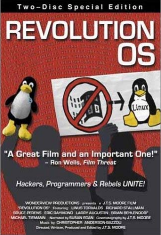

더 알아보기
Revolution OS (2001)
「I was at Agenda 2000 … and bumped in to him in an, in an elevator... in an elevator And uh, I looked at his badge and said, "Oh, I see you work for Microsoft." And he looked back to me and said, "Oh, yeah and what do you do?" And I thought he seemed just a sort of a tad dismissive I mean, here's the archetypal, you know, guy in a suit looking at a scruffy hacker And so I gave him the thousand yard stare and said,
"I'm your worst nightmare." – Eric Raymond on Revolution OS -」
「REVOLUTION OS」는 「Linux」와「오픈 소스 운동」을 통해 마이크로소프트에 대항하는 해커들의 인사이드 스토리이다. 20년간 컴퓨터 해커들이 마이크로소프트의 독점에 대항해, 소프트웨어의 발전과 소유권의 있는 방법을 바꾸는 기술 혁명을 행해 왔다. 이 혁명의 집대성이「오픈 소스 운동」이며, 「Linux 운영체제」이다. 다큐멘터리 필름「REVOLUTION OS」는 오픈 소스 운동을 이끌고 온 주역들에 대한 인터뷰를 통해 그 기원을 밝히고 주류로 성장해 가는 역사를 재조명한 작품이다. 또한, 「REVOLUTION OS」는 Linux를 개발한 핀란드 엔지니어 ‘리눅스 토발즈’와 자유 소프트웨어 운동의 ‘리차드 스톨만’, OSI 창설자인 ‘에릭 레이몬드’ 등이 Linux의 탄생으로부터 곧 도달할 때까지를 중요한 인터뷰를 다수 수록하고 있다. 영상은 시네마스코프 35 mm필름을 사용해 실리콘밸리에서 촬영하였다.